Recipientul de pe secție
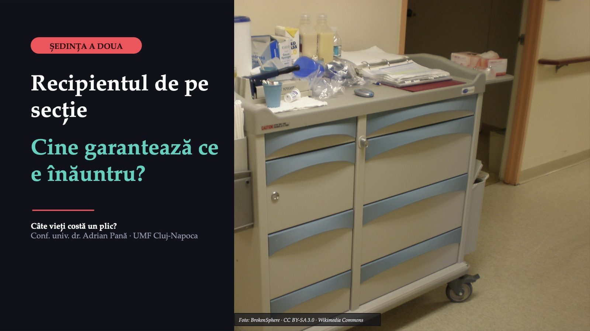
1 / 40Ce mi-ați spus
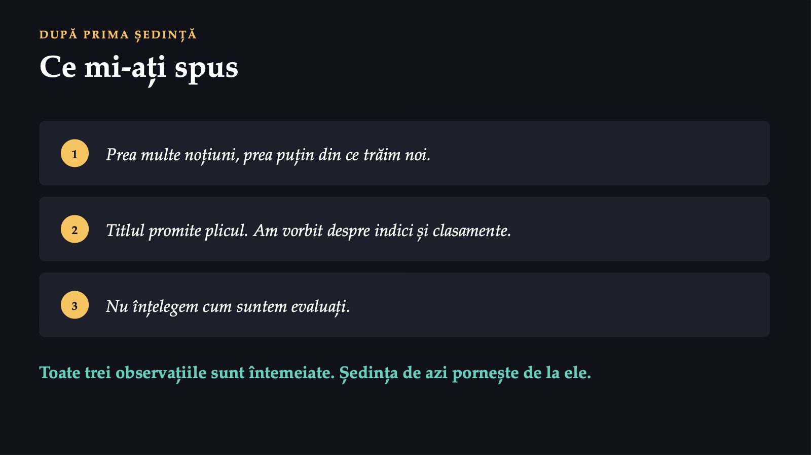
2 / 40Ce se schimbă de azi
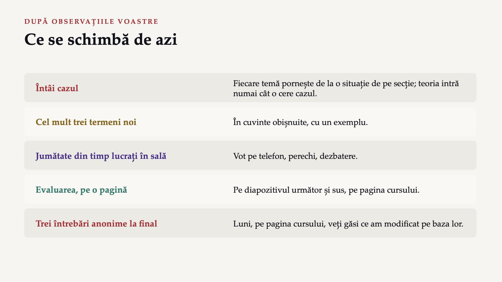
3 / 4060%
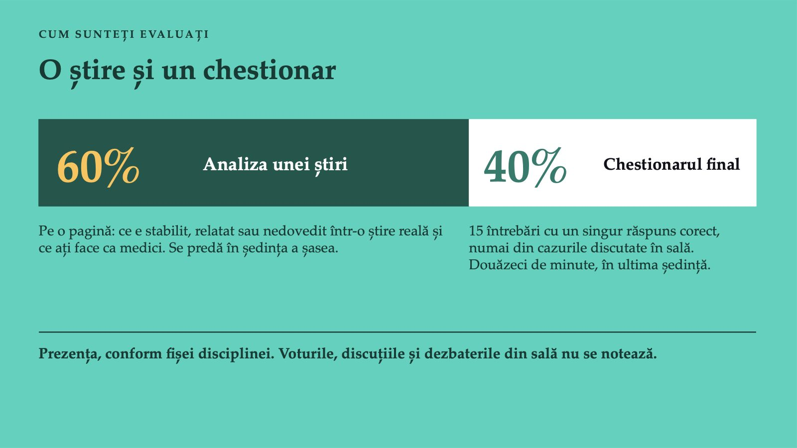
4 / 40Trei cazuri în două ore
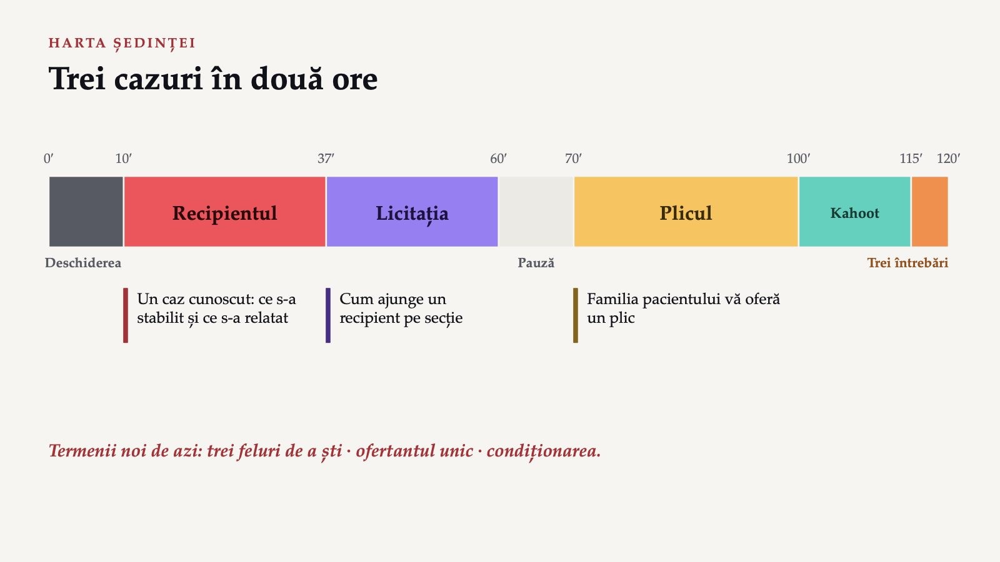
5 / 40Câte vieți costă corupția din sănătate, într-un an, în România?
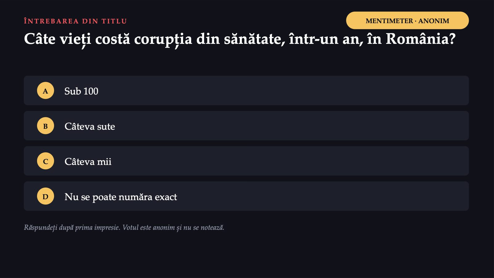
6 / 40Răspunsul apare după ședință
Răspunsul apare după ședință
Răspunsul apare după ședință
Răspunsul apare după ședință
Recipientul de pe căruciorul de tratament
![Un salon de terapie intensivă, pregătit pentru pacient Sursa: foto Ad Meskens · CC BY-SA 4.0 · Wikimedia Commons MENTIMETER · ANONIM TERAPIE INTENSIVĂ, LUNI DIMINEAȚA Recipientul de pe căruciorul de tratament Sunteți rezident. Pacientul din salonul de lângă stația asistentelor are arsuri întinse. Asistenta ia de pe căruciorul de tratament recipientul cu dezinfectant și începe pansamentul. Pe etichetă: substanța activă și concentrația. Nimeni din salon nu a analizat conținutul. Cât de sigur sunteți că în recipient e ce scrie pe etichetă? 1 · deloc 2 3 4 5 · complet Votul se reia la sfârșitul primei povești.](diapozitive/C02/009.jpg) 9 / 40
9 / 404 200 de ori
![2016 · ÎNTREBAREA DEVINE PUBLICĂ Întrebarea devine știre MAI 2016 · RELATARE DE PRESĂ Ce era, de fapt, în recipiente? 4 200 de ori mai diluat decât pe etichetă, într-o probă. Nereguli în toate cele 18 probe. Reconstituire; rezumă relatarea presei despre analizele Ministerului Sănătății. MAI 2016 Potrivit presei, Ministerul Sănătății face publice analizele. AUGUST 2016 Alte expertize, între care una a unui laborator străin: unii dezinfectanți diluați, dar în limita legală (relatări de presă). APOI Relatările despre analize spun lucruri diferite. Urmează un dosar penal. Sursă: relatare de presă: Realitatea.NET, 12 mai 2016 (registru A087); presa, august 2016.](diapozitive/C02/010.jpg) 10 / 40
10 / 40Ce a stabilit instanța, definitiv, în 2023?
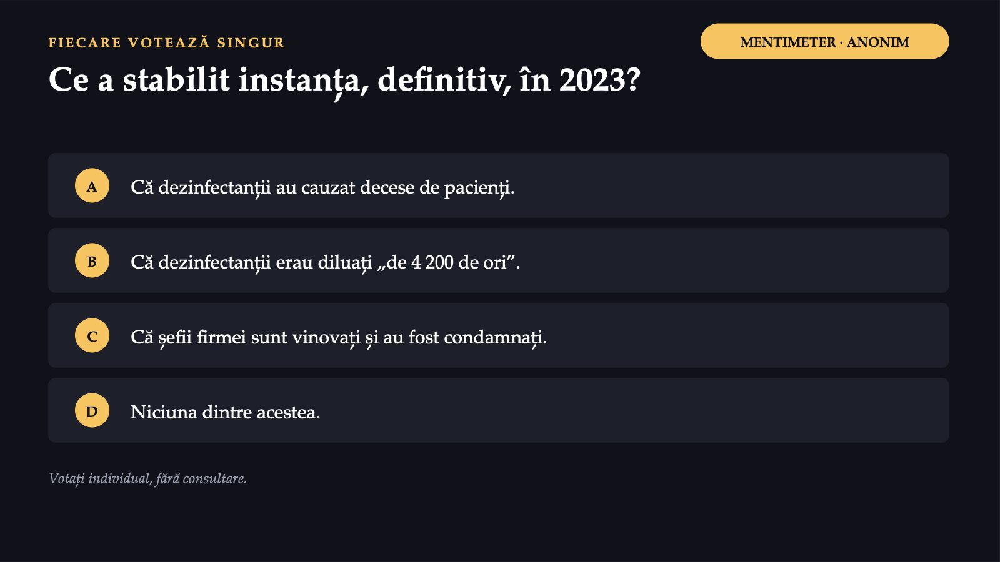
11 / 40Răspunsul apare după ședință
Răspunsul apare după ședință
Răspunsul apare după ședință
Răspunsul apare după ședință
Răspunsul apare după ședință
Răspunsul apare după ședință
Stabilit, relatat sau nedovedit?
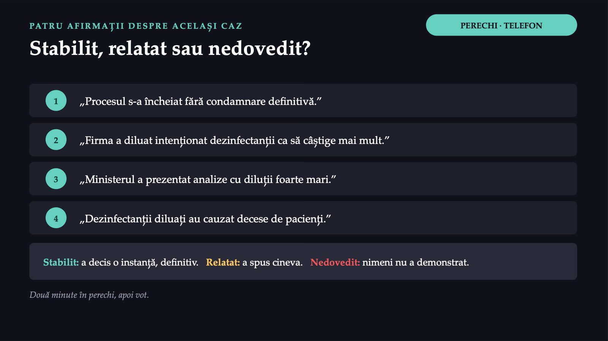
15 / 40Răspunsul apare după ședință
Răspunsul apare după ședință
Răspunsul apare după ședință
Răspunsul apare după ședință
„E adevărat că dezinfectanții din spitale omorau oamenii?”
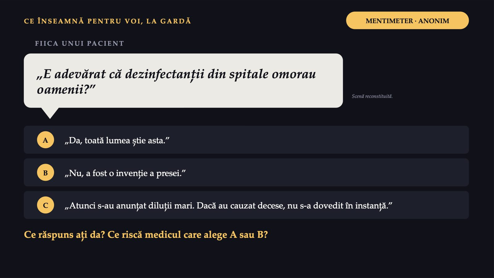
18 / 40Răspunsul apare după ședință
Răspunsul apare după ședință
Cât de sigur sunteți acum că în recipient e ce scrie pe etichetă?
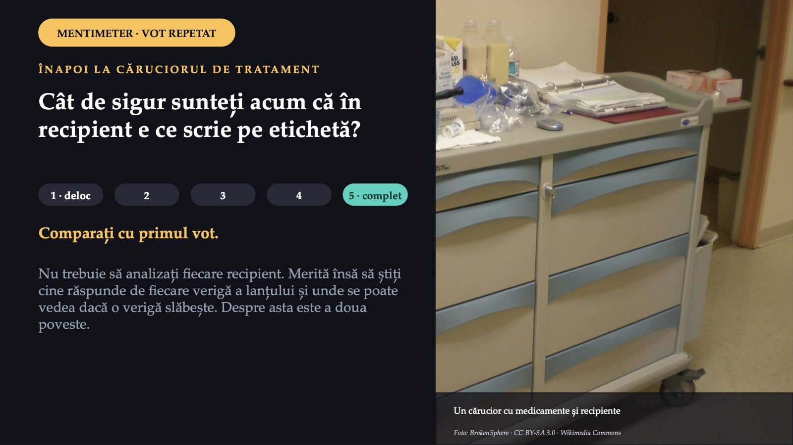
20 / 40Drumul recipientului până în salon
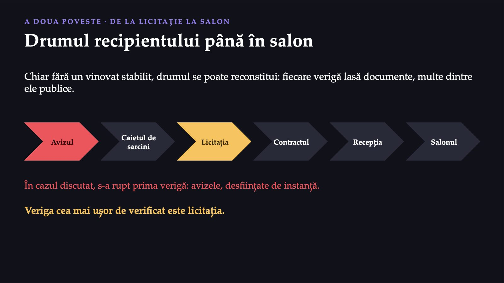
21 / 40Licitația pentru dezinfectant de mâini
![MENTIMETER · PERECHI VALORI IPOTETICE · UN SPITAL JUDEȚEAN Licitația pentru dezinfectant de mâini CAIET DE SARCINI · EXTRAS un anumit amestec de substanțe un anumit tip de recipient livrare în 48 de ore un certificat pe care îl are o singură firmă din țară Termenul pentru oferte: scurt. O SINGURĂ OFERTĂ Document ipotetic; spitalul și cerințele sunt fictive. Sunteți managerul. A venit o singură firmă. Semnați? A · Semnez B · Nu semnez, reiau licitația C · Cer întâi documentele După vot, două minute în perechi: ce argument a decis alegerea?](diapozitive/C02/022.jpg) 22 / 40
22 / 40Răspunsul apare după ședință
Răspunsul apare după ședință
Ofertantul unic
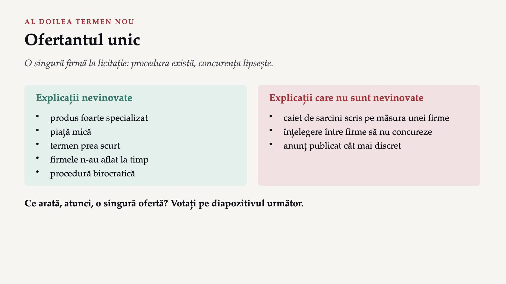
24 / 40O licitație de dezinfectanți la care a venit o singură firmă este…
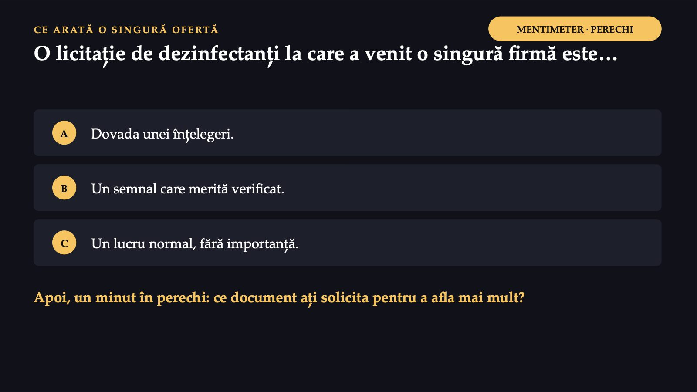
25 / 40Răspunsul apare după ședință
Răspunsul apare după ședință
44%
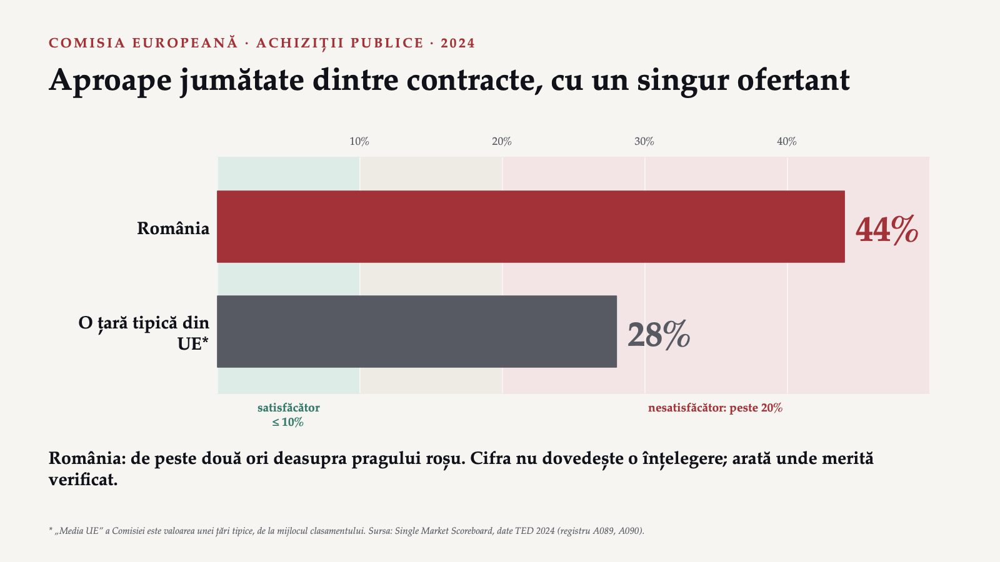
27 / 401%
 28 / 40
28 / 40Licitația începe de la necesarul secției
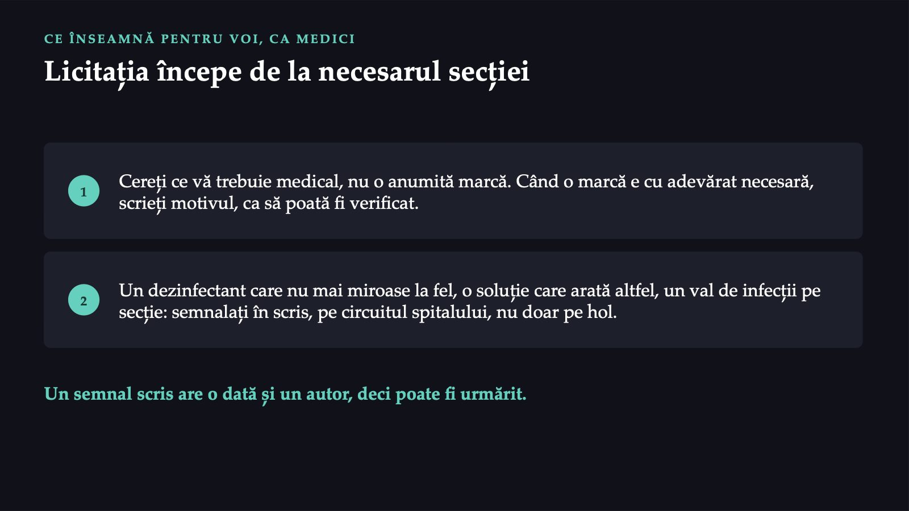
29 / 40Pauză
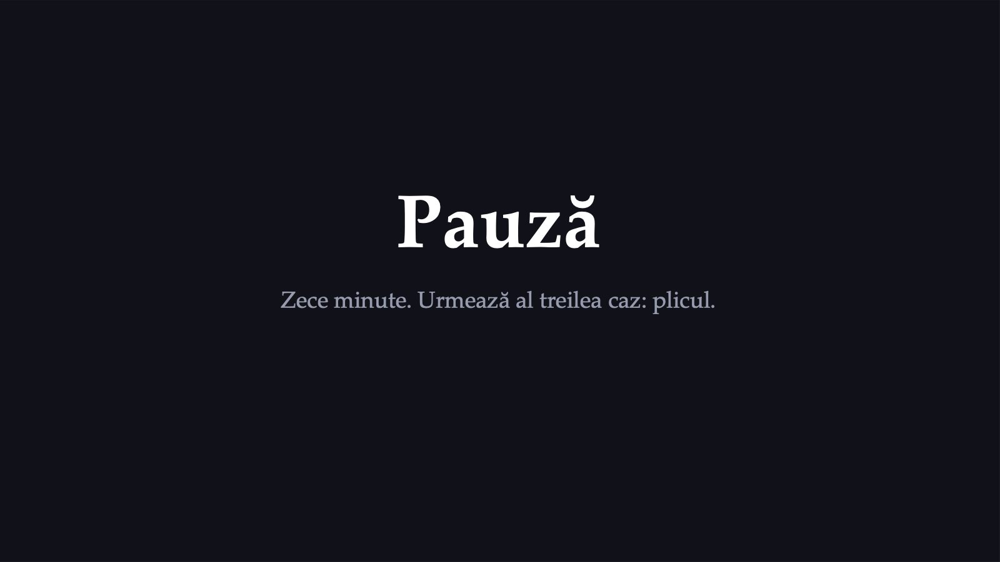
30 / 40Un cuvânt: ce simțiți când cineva vă întinde un plic?
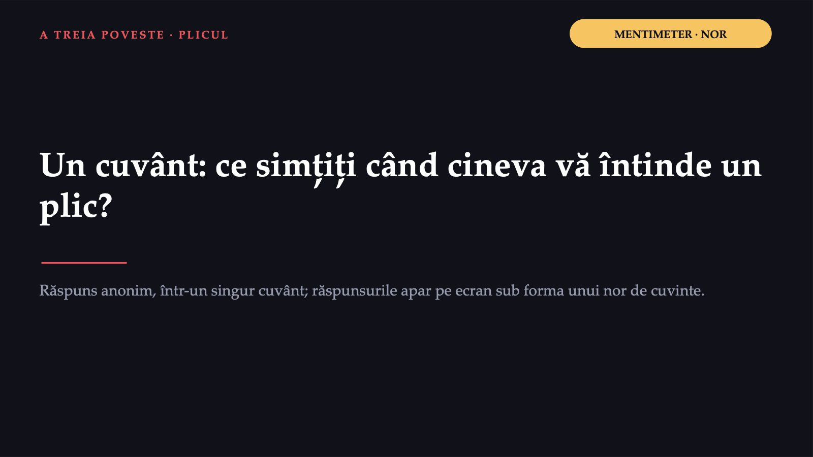
31 / 40Plicul de pe hol
![Coridorul unei secții de chirurgie generală Sursa: foto Botev · CC BY-SA 4.0 · Wikimedia Commons JOC DE ROL · 2 VOLUNTARI A DOUA ZI DUPĂ OPERAȚIE, PE HOL Plicul de pe hol Sunteți rezident la chirurgie. Pacientul operat se simte bine. Fiica lui vă oprește pe hol, vă mulțumește din suflet și vă întinde un plic: „Nu e nimic, e doar din recunoștință.” Pacientul mai are câteva zile de internare. După scenă: ce ați fi făcut în locul rezidentului? A · Primeam plicul B · Îl refuzam C · Refuzam și propuneam altceva D · Nu știu](diapozitive/C02/032.jpg) 32 / 40
32 / 40Condiționarea
![AL TREILEA TERMEN NOU Condiționarea Îngrijirea pare să depindă de o plată, spus sau nespus. Explicită Înainte de operație, cineva din echipă îi spune familiei: „ar fi bine să vă gândiți la doctor”. Implicită Nimeni nu cere nimic, dar familia a auzit că „așa se face” și se teme că, fără plic, pacientul va fi tratat mai prost. Cel mai aproape de un dar După externare: o felicitare și bomboane pentru echipă. 7 din 100 România 3 din 100 Media UE Li s-a cerut sau s-a așteptat ceva în plus (2026); „s-a așteptat” numără și condiționarea nespusă.](diapozitive/C02/033.jpg) 33 / 40
33 / 40Operația s-a terminat și a reușit. Plicul e un simplu dar?
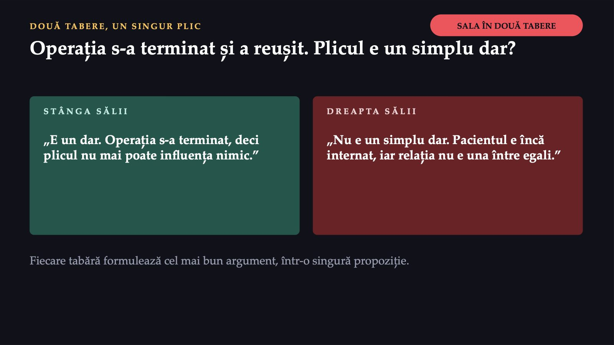
34 / 40Răspunsul apare după ședință
Răspunsul apare după ședință
Răspunsul apare după ședință
Răspunsul apare după ședință
Cum refuzați fără să răniți
![PERECHI PRIMIȚI MULȚUMIREA · REFUZAȚI PLICUL · OFERIȚI O ALTERNATIVĂ Cum refuzați fără să răniți FIICA PACIENTULUI „Pentru dumneavoastră. E doar din recunoștință.” REZIDENTUL „Vă mulțumesc din suflet, mă bucur că tatăl dumneavoastră se simte bine. Nu pot primi plicul, nici acum, nici mai târziu, iar îngrijirea lui va fi exact aceeași. Dacă vreți să ajutați secția, spitalul primește donații, cu acte.” Spuneți-le colegului de bancă, în cuvintele voastre; apoi inversați rolurile. Un plic primit „ca să nu jigniți” rămâne, pentru cei care au văzut scena, un plic primit. Scenă reconstituită.](diapozitive/C02/037.jpg) 37 / 40
37 / 40Ce faceți diferit de mâine
 38 / 40
38 / 40Recipientul, licitația, plicul: zece întrebări
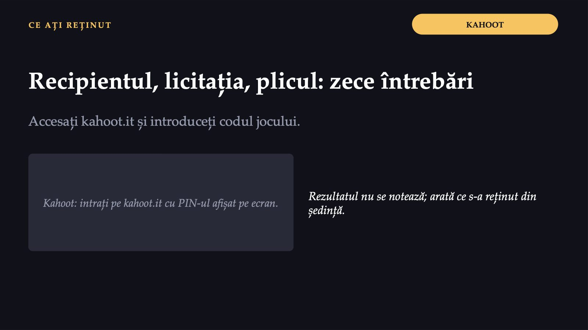
39 / 40Trei întrebări pentru final
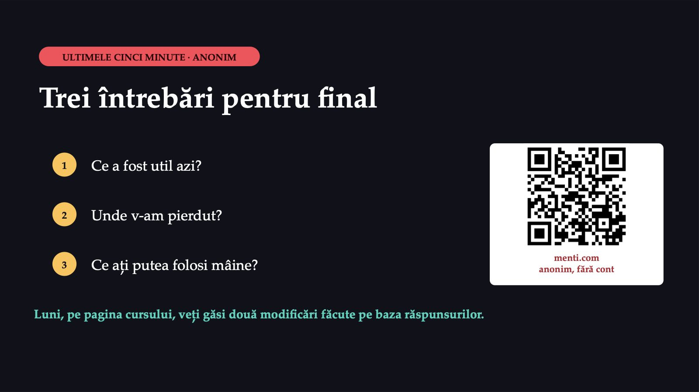
40 / 40Săgeți sau spațiu: navigare · O: vedere de ansamblu · N: notele prezentatorului · F: ecran complet · Esc: închidere